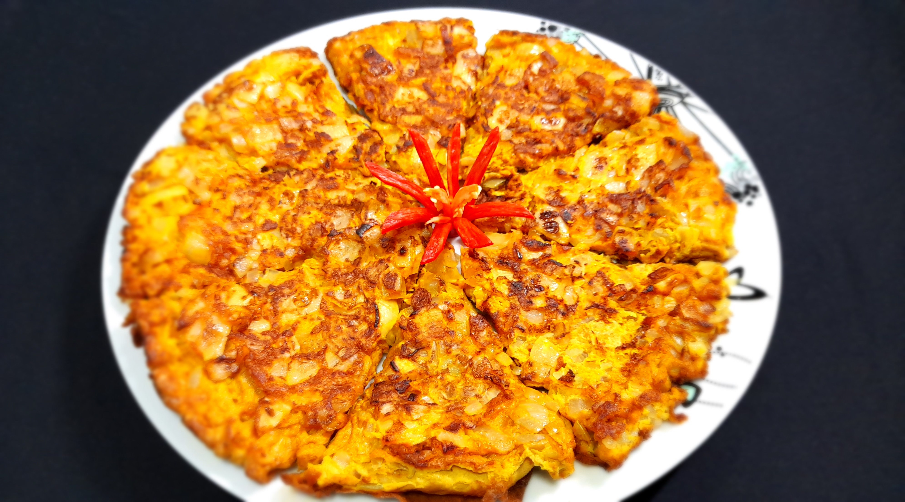

Masala Omelette

Description:
Masala omelette is a popular Indian dish available in every Indian food stall around Malaysia.
Very easy and fast to make, for breakfast or as a side dish. This unfolded omelette with crispy, bronzed edges and a soft middle is so delicious even on its own.
Ingredients:
- 2 medium red onions
- 1 large yellow onion
- 8 large eggs
- 1 tablespoon chili powder
- 1 teaspoon ground turmeric
- 1 teaspoon rock salt
- 1 pinch ground white pepper
- 5 tablespoons vegetable oil
Steps:
- Dice red and yellow onions into 3 different sizes.
- Combine eggs, onions, chili powder, turmeric, rock salt, and pepper in a large bowl; mix until well combined.
- Heat oil in a large nonstick skillet over medium-high heat until shimmering.
- Pour in egg mixture, making sure it's evenly distributed in the skillet.
- Lower heat to medium, cover, and cook for 1 minute.
- Cut omelette into 8 pieces and continue to cook until egg starts to brown around the edges and appears to have set.
- Carefully flip with a spatula and cook for 2 more minutes.